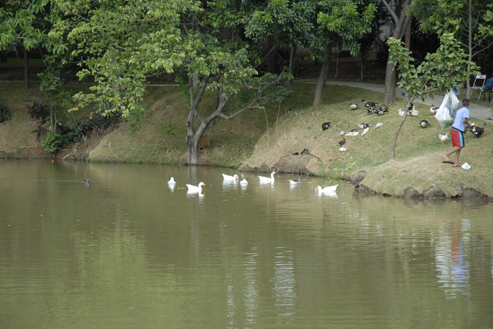

PARQUE BOTÂNICO ELOY CHAVES
O Parque Botânico Eloy Chaves, no bairro Eloy Chaves, tem 41 mil m² de área verde preservada e abriga a primeira academia ao ar livre da cidade.
Além de totalmente gratuito, o local reúne 21 equipamentos de ginástica, sendo dois destinados aos portadores de mobilidade reduzida, com mais de 40 possibilidades de exercícios.
Construído no entorno de um grande lago, está entre as principais atrações de lazer da cidade.
Os visitantes ainda têm à disposição dois mil m² de pista de caminhada, quadra de areia para vôlei, playground e quatro pontes feitas em madeira que, além de facilitar a circulação dos usuários, integra os vários ambientes do espaço.
- Endereço: Av. Benedito Castilho de Andrade, 1000 – Eloy Chaves
- Telefone: ((11) 4582-6194
- Horário de Funcionamento: Segunda à Sexta das 7h às 16h. Sábado, domingo e feriado das 7h às 17h.
Parque Botânico Eloy Chaves
O Parque está localizado no Endereço: Av. Benedito Castilho de Andrade, 1000 – Eloy Chaves.